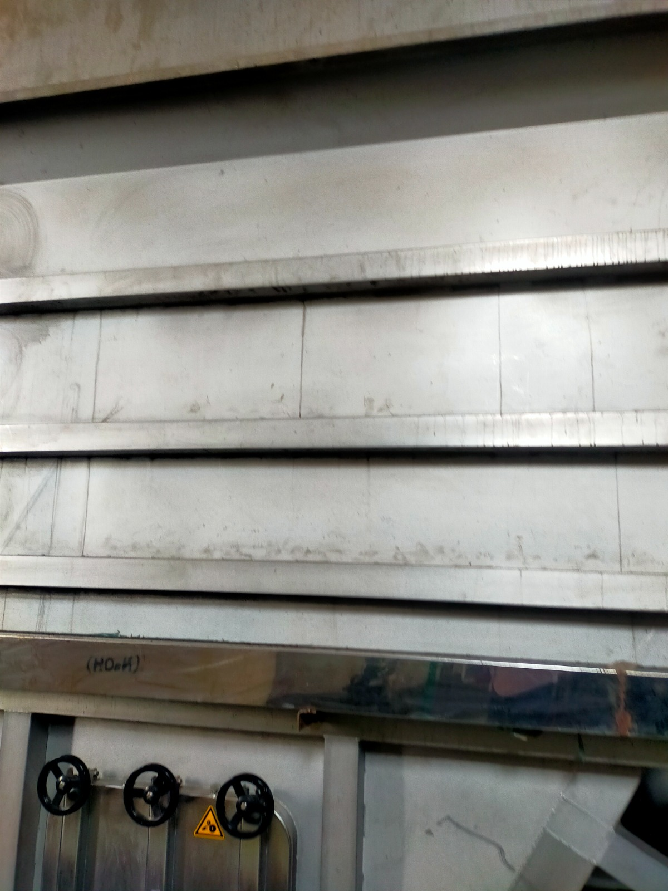

Islam Textile
Weaving Tradition, Ensuring Quality
Premium Cotton. Woven to Perfection.
Reliable quality, sustainable practices, and on-time delivery you can count on.
From Fiber to Finish
An integrated cotton pathway — spinning, weaving, and finishing — under one quality system in Bangladesh.
Discover Our Process →
Sustainability
Responsible water, energy, and cotton practices across our Narayanganj mill operations.
Our Commitment →Latest News
View All News →
Why Islam Textile
Trusted by buyers who need consistency
Focused on cotton woven textiles — not apparel retail — so quality, capacity, and delivery stay aligned for export programs.
Quality First
In-process checks and in-house lab testing for construction, shade, and handfeel.
Scalable Capacity
Spinning, weaving, and finishing sized for repeat bulk orders and seasonal peaks.
On-Time Delivery
Program planning from Dhaka with mill execution in Narayanganj and Chattogram logistics.
Export Ready
Buyer-facing specs, packing standards, and documentation for global apparel and home textile markets.
Vertical Integration
From yarn to finished fabric
One coordinated mill pathway — fewer handoffs, clearer accountability, stronger batch traceability.
Fiber
Selected cotton inputs for weaving performance.
Spinning
Ring-spun yarn with controlled evenness.
Weaving
Greige fabric on modern looms to construction.
Dyeing
Reactive and process dyeing to shade targets.
Finishing
Mercerize, sanforize, and soft finishes.
Dispatch
Inspected rolls packed for export shipment.

Facilities & Capacity
Built for reliable bulk production
Our Narayanganj campus brings spinning, weaving, and wet processing together — supported by utilities, lab, and warehouse readiness for export programs.
Quality & Certifications
Standards woven into every stage
From raw material checks to final inspection — quality is a mill culture, not a last-minute gate.

Markets We Serve
Bangladesh-made cotton for global programs
We support buyers who need dependable woven greige and finished cotton for apparel, home textile, and industrial end uses.
Gallery
Inside the mill
A look at our floors — spinning, weaving, finishing, and warehouse — without portraits.


Careers
Build your career in textiles
Join a Bangladesh cotton mill team focused on quality manufacturing, continuous improvement, and safe operations in Narayanganj.
Let's Build Something Great Together
Share constructions, finishes, and volumes — our Dhaka commercial team will respond with next steps.